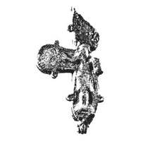

Catalog › CE-1055 · KOR2003-III.1.2.1
Encolpion fragmentar cu capete rotunjite, Răstignire pe față, cruce și 4 medalioane incizate pe revers
sec. sfârșit XII (1101–1200) · așezare fortificată din raionul Șepetivka, regiunea Hmelnîțkîi, Ucraina · Ermitajul de Stat (GE), Sankt Petersburg, secția de istorie a culturii ruse (OIRK), inv. ГД 58/7982
double-sided reliquary cross (enkolpion), aramă; c. sfârșit XII (1101–1200); found at așezare fortificată din raionul Șepetivka, regiunea Hmelnîțkîi, Ucraina; kept at Ermitajul de Stat (GE), Sankt Petersburg, secția de istorie a culturii ruse (OIRK).


Identificare
- Categorie
- Encolpion bivalv (relicvar)
- Material
- Aramă
- Tehnică
- Turnare în relief; Gravare (incizie); Niello
- Stare
- Fragmentară
- Dimensiuni
- Î 78 × L 45 mm
Iconografie
- Avers
- Neidentificat
- Descriere avers
- Imagine în relief puternic deteriorată a Răstignirii și urme de imagini nielate ale sfinților pe capetele de sus și din stânga.
- Revers
- Neidentificat
- Descriere revers
- Toate imaginile sunt executate cu linii adânci: în centru cruce și sfinți (evangheliști?) în patru medalioane.
Datare și atribuire
- Datare
- sec. sfârșit XII (1101–1200)
- Centru
- Necunoscut
- Tipologie
- Korzukhina–Peskova 2003, tip III 1 2
Descoperire
- Localitate
- așezare fortificată din raionul Șepetivka
- Regiune
- regiunea Hmelnîțkîi
- Țară
- Ucraina
- Context
- Fortificație
- Anul
- 1958
Păstrare și referințe
- Colecție
- Ermitajul de Stat (GE), Sankt Petersburg, secția de istorie a culturii ruse (OIRK)
- Nr. inventar
- ГД 58/7982
- Bibliografie
- G. F. Korzukhina, A. A. Peskova, Древнерусские энколпионы. Нагрудные кресты-реликварии XI–XIII вв., Sankt-Petersburg, 2003 [Korzukhina–Peskova 2003], p. 110, cat. nr. III 1 2/1, reprodusă la Табл. 59 (planșe, p. 301).
- Figura
- Табл. 59
- Planșe
- Korzukhina–Peskova 2003, Табл. 59 (planșă fără paginație proprie în PDF; p. 301 tipărită)
- Observații
- Datare după Peskova: sec. sfârșit XII. Circumstanțe: Săpături M. K. Karger pe detinețul cetățuii (gorodișce), 1958. Dimensiuni: fragmentar: dimensiuni păstrate. Tip combinat (grupa III 1 2): îmbinare mecanică a unei valve cu Răstignire cu o valvă cu cruce și 4 medalioane. Capete rotunjite, ușor îngustate spre încrucișare; pierdut unul dintre capetele laterale și o parte din cel de sus; balamaua de jos păstrată a valvei de față este în formă de trifoi. Tipul de veșmânt al Răstignirii nespecificat. Coordonate: nu sunt date în sursă.
Citare: Corpus Encolpiorum, CE-1055, Encolpion fragmentar cu capete rotunjite, Răstignire pe față, cruce și 4 medalioane incizate pe revers, https://vitaliejosanu1979-ux.github.io/primul-meu-proiect/piese/KOR2003-III.1.2.1/ (accesat 2026-10-17).